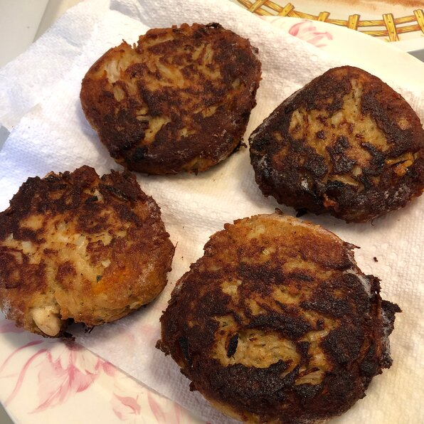

Chicken Fritters

Ingredients
- 10 ounces boneless, skinless chicken thighs, trimmed of fat and diced into 1/4-inch cubes
- ½ cup Italian-seasoned bread crumbs
- ¼ cup chopped onion
- ¼ cup shredded mozzarella cheese
- 1 egg
- ¼ cup mayonnaise
- ½ teaspoon salt
- ¼ teaspoon black pepper
- ¼ teaspoon garlic powder
- 2 tablespoons vegetable oil
Directions
- Step 1
Mix chicken, bread crumbs, onion, mozzarella cheese, egg, mayonnaise, salt, pepper, and
garlic powder in a bowl until well combined. Shape mixture into 8 equal-sized patties.
- Step 2
Heat oil in a large skillet. Fry patties until lightly browned, about 5 minutes. Flip
and fry for an additional 3 to 5 minutes. Transfer fritters to a paper towel-lined
plate.